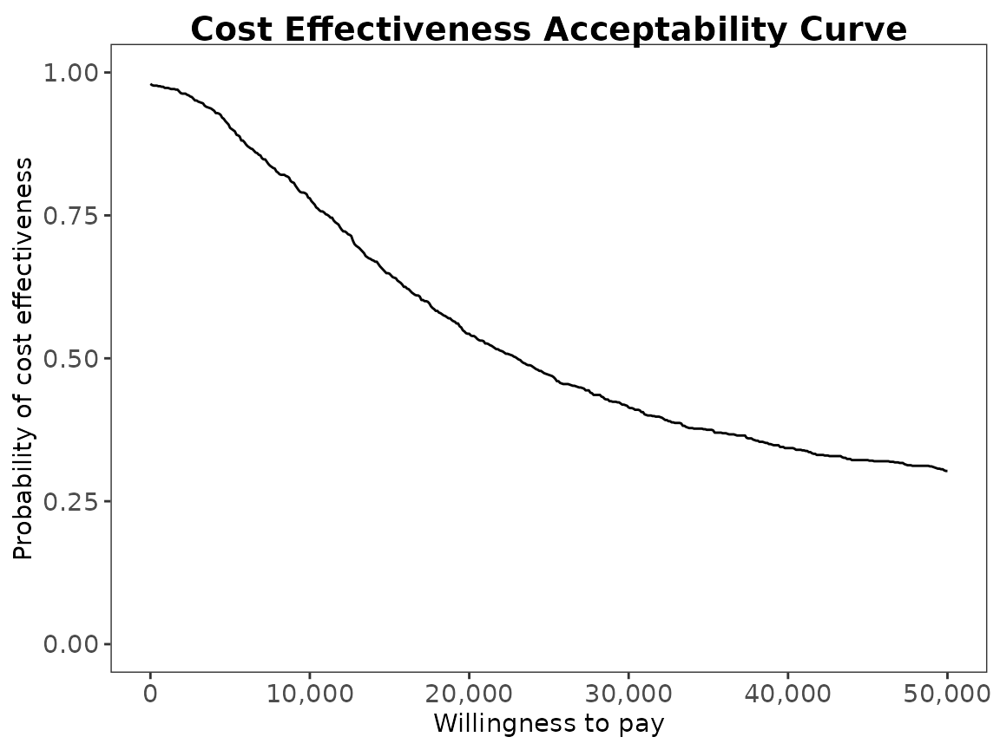
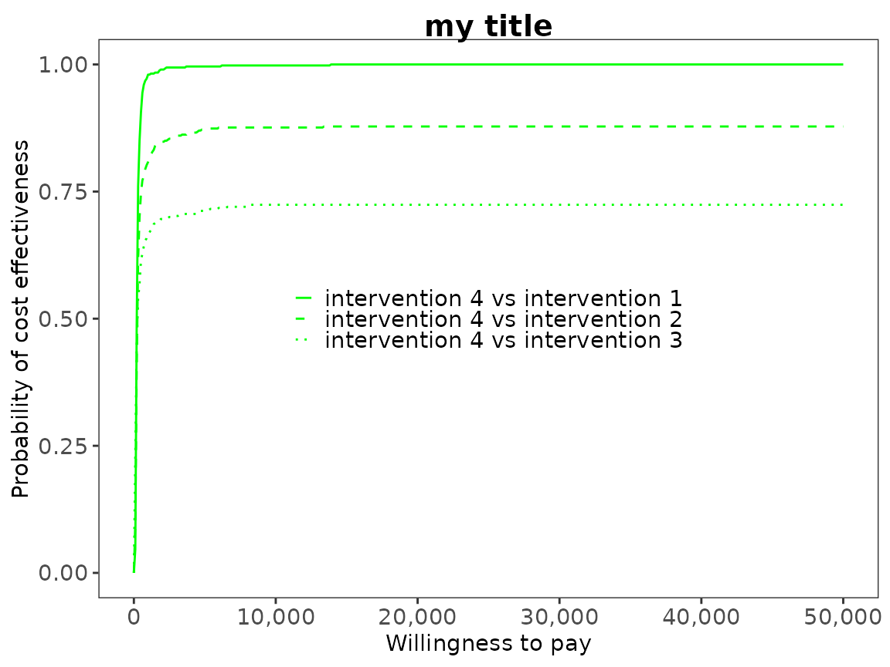
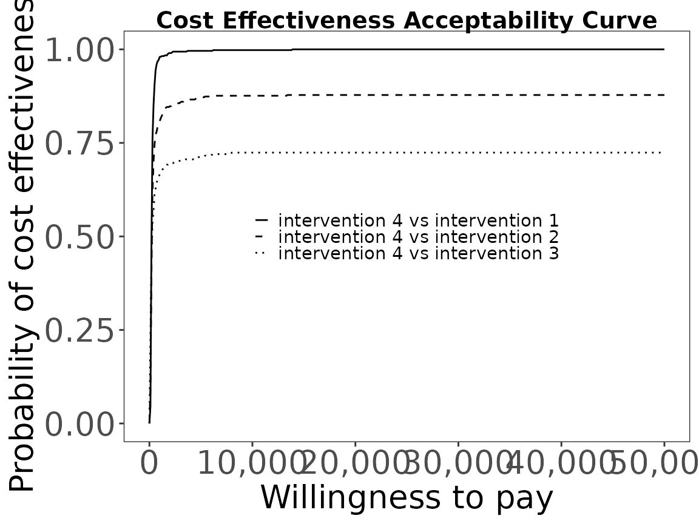
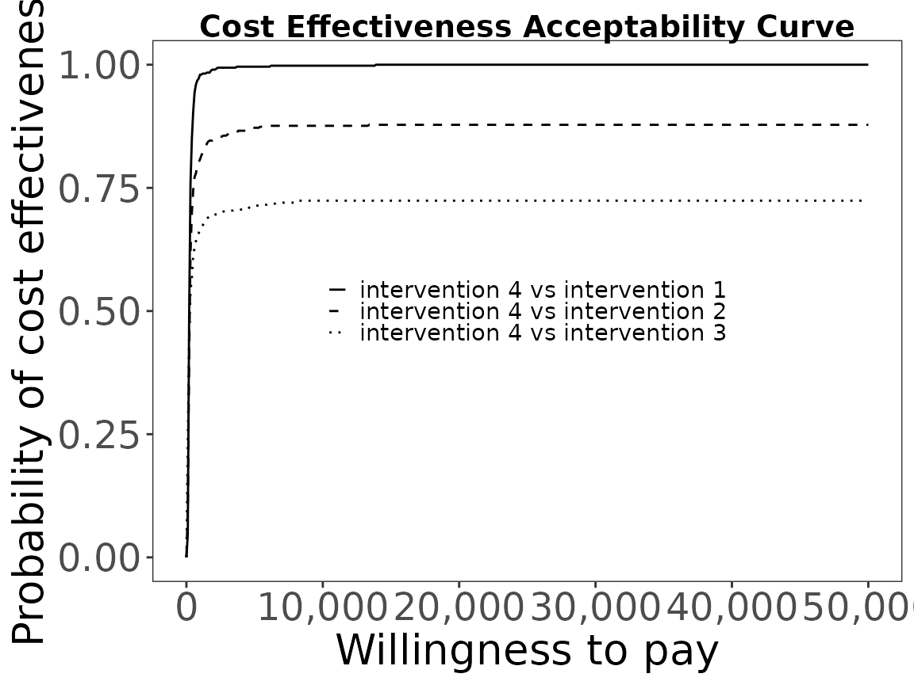
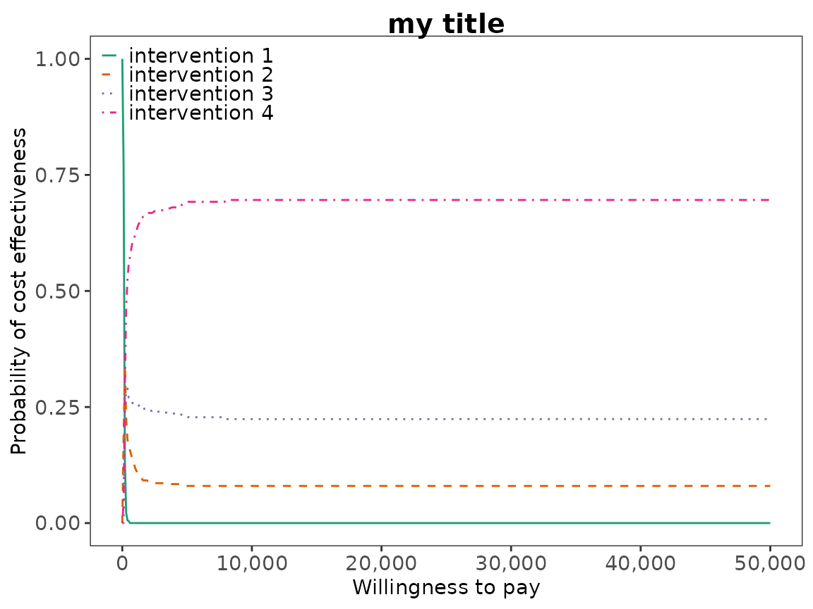

Introduction
The intention of this vignette is to show how to plot different styles of cost-effectiveness acceptability curves using the BCEA package.
Two interventions only
This is the simplest case, usually an alternative intervention () versus status-quo ().
The plot show the probability that the alternative intervention is cost-effective for each willingness to pay, ,
Using the set of posterior samples, this is approximated by
R code
To calculate these in BCEA we use the bcea()
function.
data("Vaccine")
he <- bcea(eff, cost)
#> No reference selected. Defaulting to first intervention.
# str(he)
ceac.plot(he)
The plot defaults to base R plotting. Type of plot can be set
explicitly using the graph argument.
ceac.plot(he, graph = "base")
ceac.plot(he, graph = "ggplot2")
# ceac.plot(he, graph = "plotly")Other plotting arguments can be specified such as title, line colours and theme.
ceac.plot(he,
graph = "ggplot2",
title = "my title",
line = list(color = "green"),
theme = theme_dark())
Multiple interventions
This situation is when there are more than two interventions to consider. Incremental values can be obtained either always against a fixed reference intervention, such as status-quo, or for all pair-wise comparisons.
Against a fixed reference intervention
Without loss of generality, if we assume that we are interested in intervention , then we wish to calculate
Using the set of posterior samples, this is approximated by
R code
This is the default plot for ceac.plot() so we simply
follow the same steps as above with the new data set.
ceac.plot(he)


Reposition legend.
ceac.plot(he, pos = FALSE) # bottom right



Define colour palette.
mypalette <- RColorBrewer::brewer.pal(3, "Accent")
ceac.plot(he,
graph = "base",
title = "my title",
line = list(color = mypalette),
pos = FALSE)
Pair-wise comparisons
Again, without loss of generality, if we assume that we are interested in intervention , then we wish to calculate
This can be approximated by the following.
R code
In BCEA we first we must determine all combinations of paired
interventions using the multi.ce() function.
he <- multi.ce(he)We can use the same plotting calls as before
i.e. ceac.plot() and BCEA will deal with the pairwise
situation appropriately. Note that in this case the probabilities at a
given willingness to pay sum to 1.
ceac.plot(he, graph = "base")
mypalette <- RColorBrewer::brewer.pal(4, "Dark2")
ceac.plot(he,
graph = "base",
title = "my title",
line = list(color = mypalette),
pos = c(0,1))The line width can be changes with either a single value to change all lines to the same thickness or a value for each.
